The IronViz Champions Sports Portfolio - Bo McCready
Hi all,
It is a great pleasure to have the 2025 Iron Viz Champion join the site this week. I'm sure you will be hearing and seeing alot more of him in weeks to come, to talk all things competition, but I've managed to steal a moment of his time to talk about one of his passions, which is part of his growing sports portfolio.
CJ: Bo, great to have you join to share your interest in sports analytics. Before we dive into your portfolio - Let’s start with a little about you - how did you get into data? How would you describe your public portfolio?Bo: Thanks for having me here, CJ! My path into the data world was a little crooked, as I know many of ours are. I studied History as an undergraduate and didn’t take a single math course. When I was working on my Master’s in Public Policy, I was put into a required statistics course and I bought a copy of Moneyball to see if it would spark anything in me. Sure enough, it did, and I amazingly managed to do well in stats. I stayed in school through my Ph.D. and kept learning more about quantitative work before getting a job as a researcher with the local school district and starting to do data work full time. My public portfolio reflects my hobbies - you’ll see lots of projects about sports, film, music, and history!CJ: With a visual like your “first round upset”, you must have had so much match result data available it must have been hard to decide what metric to focus on? You landed on the first round upset results. How does finding that narrative within the data translate to then how you approached the chart choices and seed ordering?
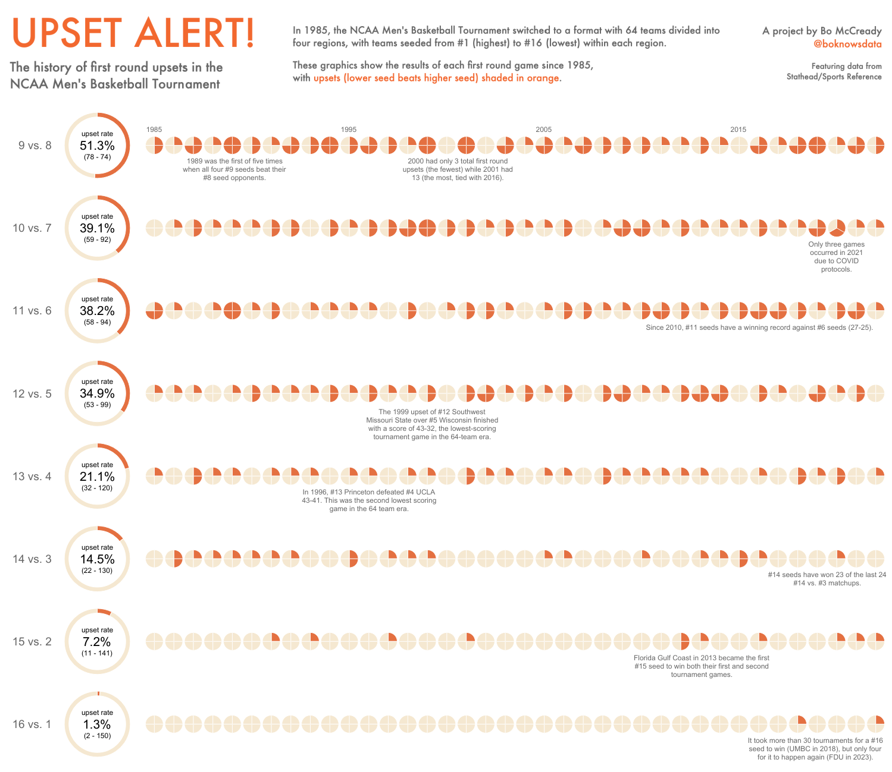
Bo: In the USA, it’s a ritual for so many people to fill out their NCAA tournament predictions and compete with their friends. We love debating which underdogs have a shot to win and those first round upsets tend to form so many people’s opinions about whether a tournament is fun or not. So, as I was designing this project, I was imagining what someone might want to see when they were filling out their own predictions!CJ: I love the column design to the NFL draft picks visually. There is something so appealing about the uniformity and reduced color highlighting. What do you think the drivers are behind the downturn in Pro Bowler first round picks and the upturn in picks with no NFL games in recent years?
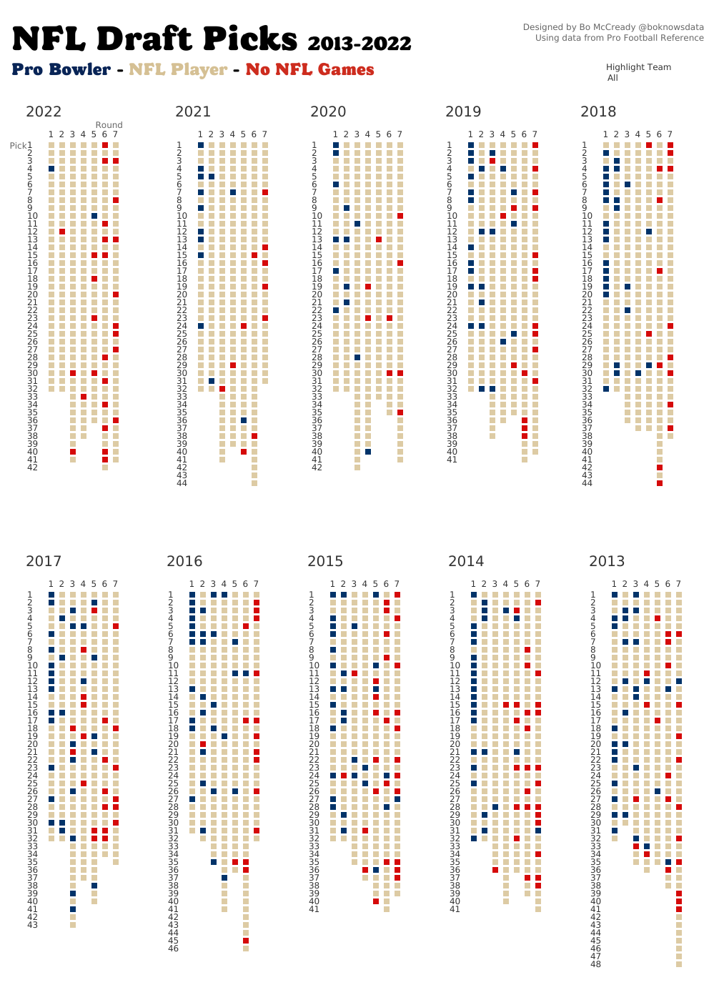
Bo: I think there are a few factors coming into play. Some players might take a few years to actually make it into a game or to reach their first Pro Bowl, so I bet we’d see a lot better representation as we move further into the future. I think we also see better strength and conditioning programs leading to longer careers, especially for the top athletes, so there may not be as many “spots” to go around.CJ: The 2020 world cup “print”visual is a great way of breaking down the player information through group, team and club. The consistency in flags for domestic clubs for countries such as England, Qatar and Saudi really stand out from the page. Was this intentional?In your opinion, does having players from multiple leagues/countries influence play style and chemistry?Bo: Yes, the consistently absolutely is something I wanted to highlight! I think it’s fascinating how basically all of the best English players in the world end up back home in the PL. It’s the best league in the world and I think this project helped underline that for me. On the other hand, I do wonder how many nations who have their stars playing across the world can build chemistry in such a short time when preparing for something like the World Cup. I’d imagine managers of those more “global” teams would prioritize simpler tactics and allowing players to just be themselves on the pitch. I always felt that one of the reasons the USA always seemed to underperform their talent level with Gregg Berhalter was his rigid and complex system. I don’t know if players who didn’t have a lot of shared league experience could really handle that well.
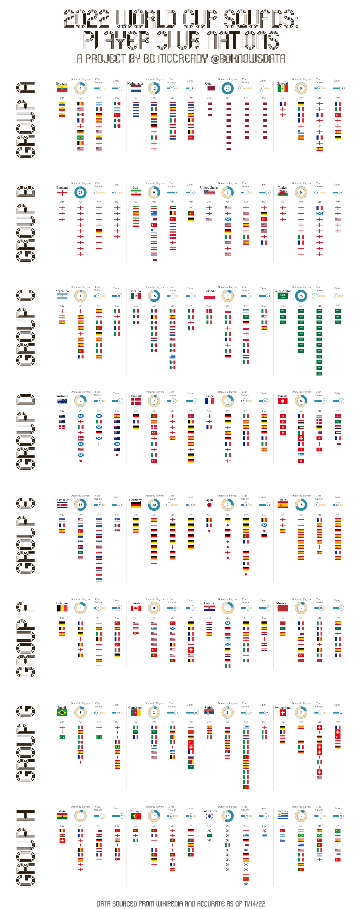
CJ: Many of your visuals have a small multiple effect to them, and mirror some of your hobbies in prints. How do you make sure you can tell a story with just charts and no written context, such in the USWNT World cup visual?
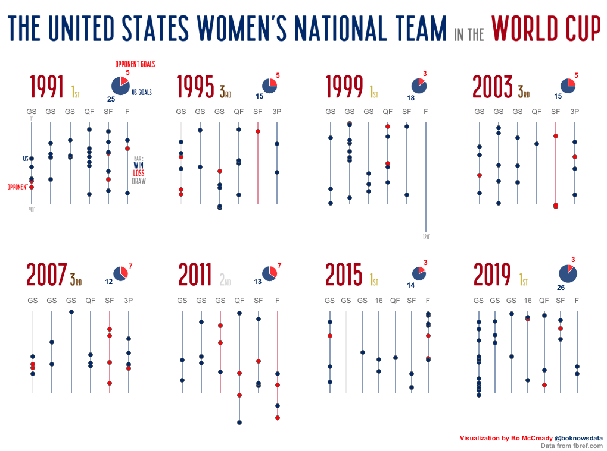
Bo: Telling a simple story with just charts is something that I love to try! Since the start of my data viz journey, I have wanted to reach audiences who don’t think about data as much as those of us who work with it all day. So I think it’s always a fun challenge to think about accessible graphics with an easy, obvious message, and if they’re understandable without written context, that’s even better for audiences who don’t speak English. It’s always a thrill when I see a project of mine reshared with commentary in a language I don’t understand, because that tells me the data and visuals were powerful enough to speak across the language divide.CJ: Within your Major League Soccer Salary visual. What stood out to you in terms of spend composition amongst the different teams and positions? How does the number of players in each position impact the ratio of total spend amongst positions?
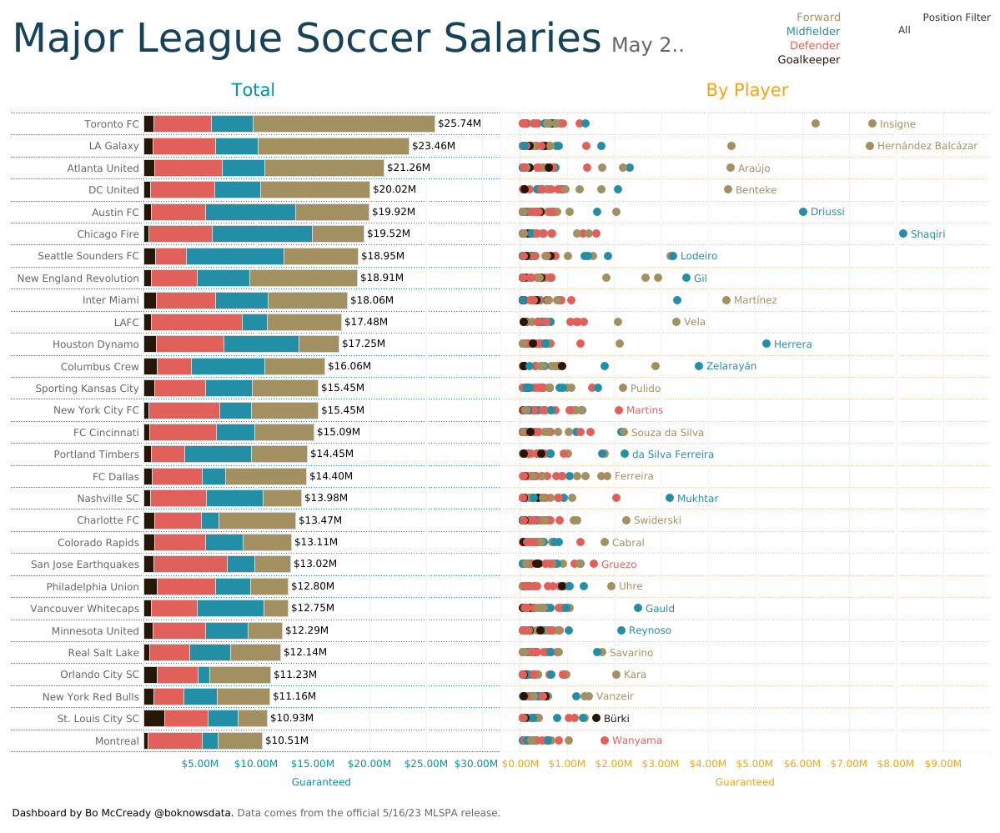
Bo: Roster building in Major League Soccer is so strange and complex relative to the big European leagues! For me, it’s always fascinating to see how teams choose to use their three Designated Player spots and which teams spend heavily on those spots. I’m a season ticket holder for Austin FC and this season, our team invested in attackers so that our entire attacking trio is Designated Players, with the rest of the squad relatively inexpensive. In general, I think you see MLS teams prioritizing attacking spending even with relatively fewer attackers in the squad because nothing really breaks a match open like a threatening attacker. One thing you’ll notice in this viz and in other MLS data is that the league has relative parity in investment, at least compared to European leagues. There are limitations in what you can pay your players, much like other major American sports leagues, and that system is designed to encourage consistent competition and avoid extended dominance by wealthy teams that just consolidate their position year after year. In that viz you linked, you’ll notice Toronto outspending the bottom of the league at a 2.5:1 ratio, but that’s nothing like comparing Man City and Ipswich, for example!CJ: Your MLB play off visual emphasises the consistency of teams year on year making the playoffs. What impacted your choice to set the order of your small multiple in this way? What do you think the main drivers are behind teams like the Yankees of consistent play offs, vs Red Sox that have a more up down wave of streaks.Bo: In this viz, each row is a division and then the teams are sorted from left to right by playoff appearances. I’m a Seattle Mariners fan and as you can see, that hasn’t been very much fun. I think as much as people love to hate on the Yankees for their big spending, they also are just a very well run franchise. They spend big on their roster, but their player development is top notch and they are able to recruit free agents to play for the team as well as anyone. New York City is a huge draw and they capitalize on it well! The Red Sox, on the other hand, are still big spenders but don’t tend to spend quite as much as the Yankees, so they are more likely to have some downturns. And with the MLB playoff model, the Red Sox are competing against the other teams in the American League East, which are three lower budget but very smart franchises!CJ: Great to see you throw in some West Ham visuals over the years. You created one that focussed on Michail Antonio’s record breaking 49 all time premier league scorer for West Ham. You are able to capture additional details around “blips” in season, and potential injury or fitness with little game time minutes in addition to the position shift. Antonio’s goals – four against Norwich, 10 in total – were a key reason West Ham stayed up in 2019!Is experimenting with combining different chart types (pie & circle shapes) as overlays something that has been of growing interest to you?
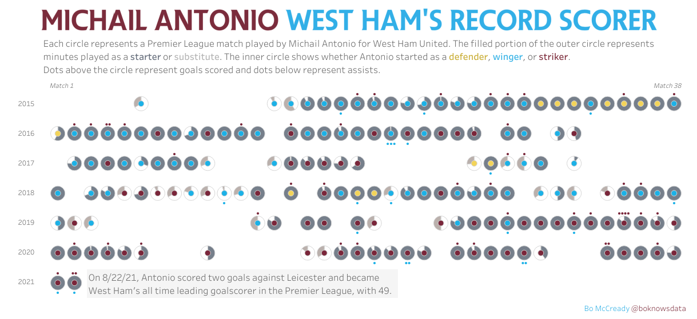
Bo: Absolutely. I enjoy pushing boundaries and that includes using things like pies that often are frowned upon. I remember when Tableau didn’t have floating transparent objects and ever since those became available, I’ve loved seeing what novel charts can be created simply by floating one thing over another. And I’ve used that style for multiple West Ham projects, including prints I made to commemorate their Europa Conference League championship. I was lucky enough to have one of those prints signed by members of the winning squad when they were in the USA last summer. Lukasz Fabianski called the project “really cool,” and that’s one of my favorite endorsements! CJ: To close, let's talk about one of my favourites on your profile. The MLB Team 2019 attendance small multiple viz. What are some of the do’s and don’ts when it comes to creating a radial viz that balances an interpretable custom chart type with design flair? What were some of the design changes you made as the viz developed?
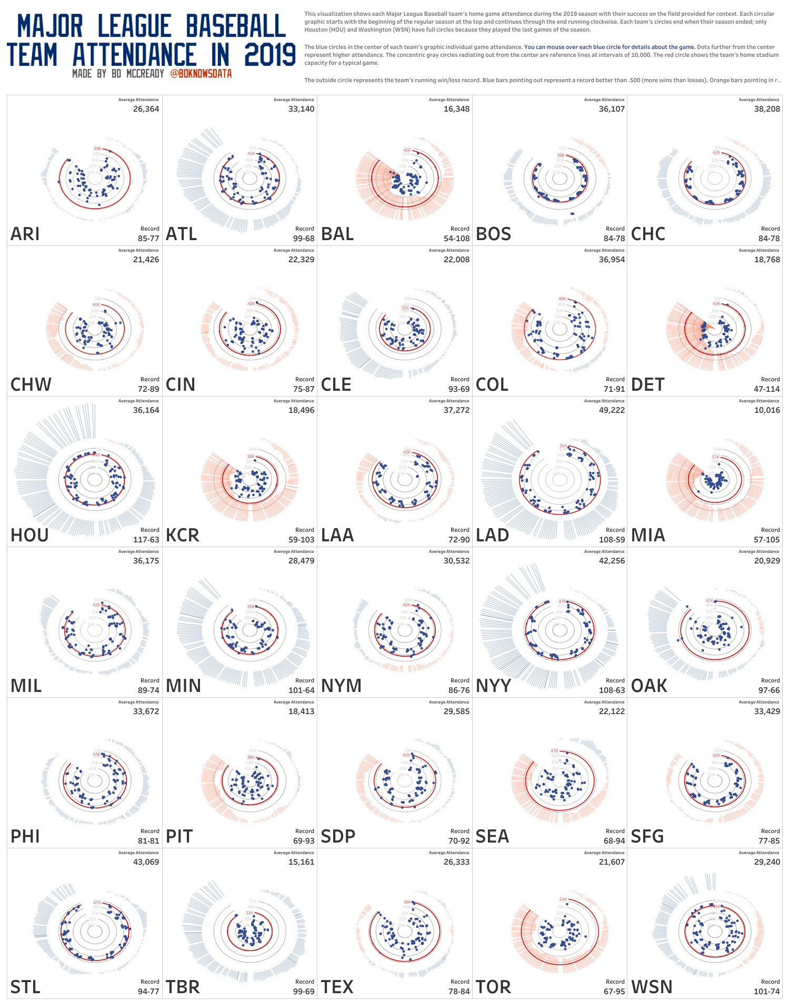
Bo: This project was so much fun and even though it’s been a few years, I remember the development process well! Honestly, the design didn’t evolve much between the first ideas I had and the final project. I think the biggest addition along the way was adding stadium capacity for context. As for do’s and don’ts, I guess I’d encourage experimenting with novel custom charts like this for data that is pretty conceptually simple. Although these charts are fancy, the basic idea of “how many people went to this baseball game” is straightforward. If I’m asking my end users to take on the mental load of understanding a novel chart type, I don’t also want to ask them to take on the mental load of interpreting a complex metric. I would always suggest considering the complexity balance between a chart and the idea it’s representing.
CJ Round-up: If you haven't had the opportunity to catch up on Iron Viz 2025 yet, check it out on youtube here.
Once again, Thanks Bo for making time & congratulations on your success. Hope you had a wonderful conference. Looking forward to hearing and seeing more from Bo in future weeks.
LOGGING OFF,
CJ
 Bo: In this viz, each row is a division and then the teams are sorted from left to right by playoff appearances. I’m a Seattle Mariners fan and as you can see, that hasn’t been very much fun. I think as much as people love to hate on the Yankees for their big spending, they also are just a very well run franchise. They spend big on their roster, but their player development is top notch and they are able to recruit free agents to play for the team as well as anyone. New York City is a huge draw and they capitalize on it well! The Red Sox, on the other hand, are still big spenders but don’t tend to spend quite as much as the Yankees, so they are more likely to have some downturns. And with the MLB playoff model, the Red Sox are competing against the other teams in the American League East, which are three lower budget but very smart franchises!
CJ: Great to see you throw in some West Ham visuals over the years. You created one that focussed on Michail Antonio’s record breaking 49 all time premier league scorer for West Ham.
You are able to capture additional details around “blips” in season, and potential injury or fitness with little game time minutes in addition to the position shift. Antonio’s goals – four against Norwich, 10 in total – were a key reason West Ham stayed up in 2019!
Is experimenting with combining different chart types (pie & circle shapes) as overlays something that has been of growing interest to you?
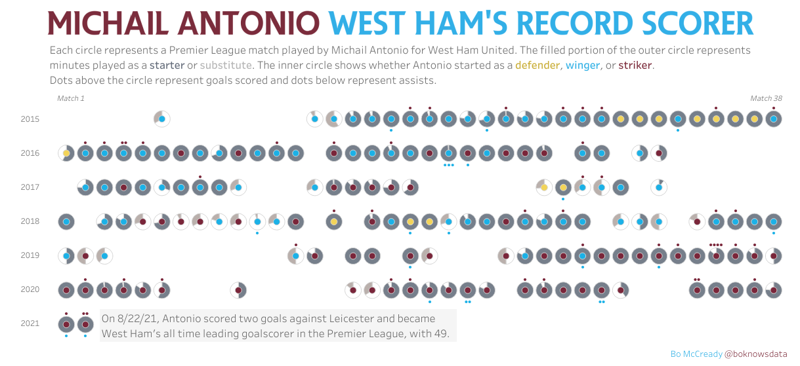
Bo: Absolutely. I enjoy pushing boundaries and that includes using things like pies that often are frowned upon. I remember when Tableau didn’t have floating transparent objects and ever since those became available, I’ve loved seeing what novel charts can be created simply by floating one thing over another. And I’ve used that style for multiple West Ham projects, including prints I made to commemorate their Europa Conference League championship. I was lucky enough to have one of those prints signed by members of the winning squad when they were in the USA last summer. Lukasz Fabianski called the project “really cool,” and that’s one of my favorite endorsements!
CJ: To close, let's talk about one of my favourites on your profile. The MLB Team 2019 attendance small multiple viz. What are some of the do’s and don’ts when it comes to creating a radial viz that balances an interpretable custom chart type with design flair? What were some of the design changes you made as the viz developed?
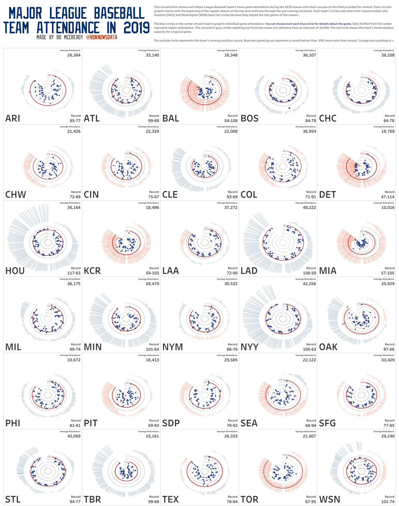
Bo: This project was so much fun and even though it’s been a few years, I remember the development process well! Honestly, the design didn’t evolve much between the first ideas I had and the final project. I think the biggest addition along the way was adding stadium capacity for context. As for do’s and don’ts, I guess I’d encourage experimenting with novel custom charts like this for data that is pretty conceptually simple. Although these charts are fancy, the basic idea of “how many people went to this baseball game” is straightforward. If I’m asking my end users to take on the mental load of understanding a novel chart type, I don’t also want to ask them to take on the mental load of interpreting a complex metric. I would always suggest considering the complexity balance between a chart and the idea it’s representing.
CJ Round-up: If you haven't had the opportunity to catch up on Iron Viz 2025 yet, check it out on youtube here.
Once again, Thanks Bo for making time & congratulations on your success. Hope you had a wonderful conference. Looking forward to hearing and seeing more from Bo in future weeks.
LOGGING OFF,
CJ
Bo: In this viz, each row is a division and then the teams are sorted from left to right by playoff appearances. I’m a Seattle Mariners fan and as you can see, that hasn’t been very much fun. I think as much as people love to hate on the Yankees for their big spending, they also are just a very well run franchise. They spend big on their roster, but their player development is top notch and they are able to recruit free agents to play for the team as well as anyone. New York City is a huge draw and they capitalize on it well! The Red Sox, on the other hand, are still big spenders but don’t tend to spend quite as much as the Yankees, so they are more likely to have some downturns. And with the MLB playoff model, the Red Sox are competing against the other teams in the American League East, which are three lower budget but very smart franchises!
CJ: Great to see you throw in some West Ham visuals over the years. You created one that focussed on Michail Antonio’s record breaking 49 all time premier league scorer for West Ham.
You are able to capture additional details around “blips” in season, and potential injury or fitness with little game time minutes in addition to the position shift. Antonio’s goals – four against Norwich, 10 in total – were a key reason West Ham stayed up in 2019!
Is experimenting with combining different chart types (pie & circle shapes) as overlays something that has been of growing interest to you?
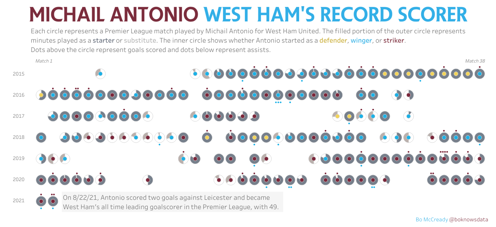
Bo: Absolutely. I enjoy pushing boundaries and that includes using things like pies that often are frowned upon. I remember when Tableau didn’t have floating transparent objects and ever since those became available, I’ve loved seeing what novel charts can be created simply by floating one thing over another. And I’ve used that style for multiple West Ham projects, including prints I made to commemorate their Europa Conference League championship. I was lucky enough to have one of those prints signed by members of the winning squad when they were in the USA last summer. Lukasz Fabianski called the project “really cool,” and that’s one of my favorite endorsements!
CJ: To close, let's talk about one of my favourites on your profile. The MLB Team 2019 attendance small multiple viz. What are some of the do’s and don’ts when it comes to creating a radial viz that balances an interpretable custom chart type with design flair? What were some of the design changes you made as the viz developed?
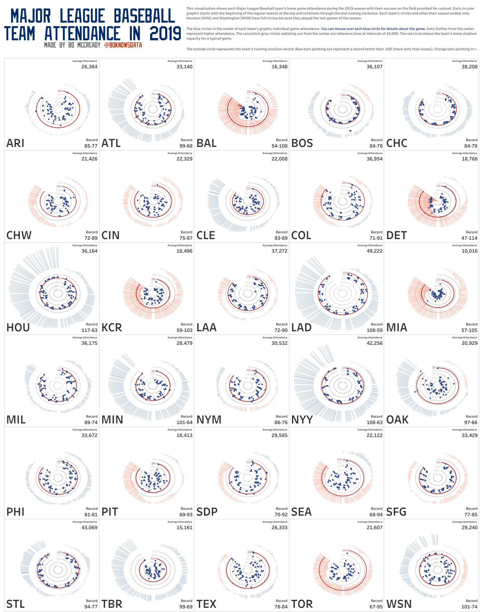
Bo: This project was so much fun and even though it’s been a few years, I remember the development process well! Honestly, the design didn’t evolve much between the first ideas I had and the final project. I think the biggest addition along the way was adding stadium capacity for context. As for do’s and don’ts, I guess I’d encourage experimenting with novel custom charts like this for data that is pretty conceptually simple. Although these charts are fancy, the basic idea of “how many people went to this baseball game” is straightforward. If I’m asking my end users to take on the mental load of understanding a novel chart type, I don’t also want to ask them to take on the mental load of interpreting a complex metric. I would always suggest considering the complexity balance between a chart and the idea it’s representing.
CJ Round-up: If you haven't had the opportunity to catch up on Iron Viz 2025 yet, check it out on youtube here.
Once again, Thanks Bo for making time & congratulations on your success. Hope you had a wonderful conference. Looking forward to hearing and seeing more from Bo in future weeks.
LOGGING OFF,
CJ